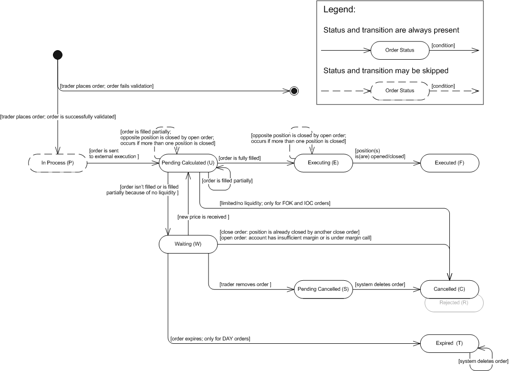

The article describes an Open/Close Market order.
An Open/Close Market Order (generally known as a Market Order) is an order to buy or sell an instrument immediately at the best price currently available in the market. The main purpose of this order is to secure execution at any price, which means that, as long as there are willing buyers and sellers, the trader is guaranteed execution but has no certainty of the actual price the order will be dealt at.
Note: If you want to have certain control over the price of a market order, you should use the following orders: Open/Close, Open/Close Limit, and Open/Close Range.
With an open/close market order, the trader has the following time-in-force options that provide additional instructions on how long the order should remain active:
Time-in-Force Option |
Description |
Fill Or Kill (FOK) |
An instruction to fill an order immediately and completely or not at all. |
Immediate Or Cancel (IOC) |
An instruction to fill an order (or any of its portions) immediately after it has been brought to the market; any portions not executed immediately must be rejected. An IOC order may be executed in portions. Such execution results in a number of positions opened/closed at different prices. |
Good Till Cancelled (GTC) |
An order which remains active until the trader decides to cancel it or until the order is executed. In the event of limited liquidity, a GTC order may be executed in portions. Such execution results in a number of positions opened/closed at different prices. |
Day (DAY) |
An order that automatically expires if not executed on the day the order is placed. During the trading day the order behaves exactly like a GTC order. |
Generally, an open market order is used for entering the market (opening a position) while a close market order is used for exiting the market (closing a position). See execution scenario 1. This is a common rule for regular accounts which are not subject to FIFO and allow hedging. If, however, hedging is disabled, placing an open market order in the direction opposite to an existing position will result in closing such position. FIFO-based accounts do not allow placing close market orders, so whether the trader is willing to exit the market immediately at the best available price, he/she must use an open market order or a Net Amount Order.
A close market order can be specified as a Net Amount Order. This is an instruction to close all positions in the given instrument. This type of order was initially designed for FIFO-based accounts, but has eventually become available for all accounts regardless of their settings. See execution scenario 5.
When the trader places an open/close market order, the order is automatically assigned the best price available at that moment (original price). However, this price is not guaranteed since the system will search for the best price again (new price) before sending the order to the bank. If the new price is better than the original price, the order will be executed at the new price. The new price may also be worse than the original price of the order. In this case, the order will be executed at a worse price.
An open/close market order with GTC and IOC time-in-force options can be executed partially. It means that one order may result in a number of positions opened/closed at different prices. A GTC order is filled in portions until completely executed. An IOC order is filled in portions to the maximum extent possible (until the liquidity pool is dried up), the remainder of the order is rejected. In case of partial closing, the system closes a position in the filled amount and opens a new position in the remaining amount. The system does so until the order is filled in its entirety (GTC orders) or until the liquidity dries up (IOC orders). See Execution Scenarios.
The trader may cancel only a GTC open/close market order and only in cases where there is no liquidity to fill the order (or the liquidity pool is not large enough) and the order is set to wait until new quotes are received from the banks.
The state machine below is based on FXCM's order statuses. Note that the system creates an order only after the order is successfully validated. Otherwise, the system creates a rejection message and does not store the order in the database. However, the information about the order (such as, for example, the order ID and the reason for its rejection) is stored in the database.
Open/Close Market Order: State Machine

Open/Close Market Order: FXCM Order Statuses Description
Order Status |
Order Status Description |
Transition |
||||||||
In Process (P) |
The order was successfully validated and is ready for further execution. |
|
||||||||
Pending Calculated (U) |
The status has one of the following meanings:
|
|
||||||||
Executing (E) |
The order was completely filled. |
|
||||||||
Executed (F) |
A position was opened/closed. Note that the order may result in a number of open/closed positions. |
|||||||||
Waiting (W) |
The status is applicable only to GTC orders: |
|
||||||||
Pending Cancelled (S) |
The status is applicable only to GTC orders: |
|
||||||||
Cancelled (C) |
The status has one of the following meanings:
|
|||||||||
Expired (T) |
The status is applicable only to DAY orders: |
|